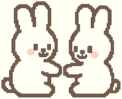
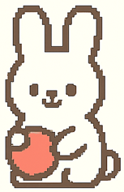

Social Nature
Rabbits are naturally social animals that enjoy companionship, whether with other rabbits or humans. It's best not to house a rabbit alone unless a vet recommends it, as they can become lonely and bored.
Communication & Ear Language
Rabbits are quiet but expressive animals. One of their main ways of communicating is through ear positioning. Since they rely on hearing to stay alert for predators, their ears also reflect their mood.
| Ear Position | What It Means |
|---|---|
| Relaxed & Drooping | Content, relaxed bunny |
| Close Together & Slightly Lowered | Happy and safe |
| Upright & Moving | Alert or listening for danger |
| Pointing Forward | Curious or attentive |
Rabbits may also purr through soft tooth grinding when they’re relaxed. This is different from loud grinding, which may indicate discomfort and should be checked by a vet.
Grooming & Affection
Grooming is a major part of rabbit behavior. They often clean themselves by licking their paws and wiping their faces- similar to cats. A bunny that grooms often is usually healthy and happy.
Rabbits also show affection by grooming other bunnies- or even you! Licking or nudging is your rabbit’s way of bonding and saying “I like you.” Gentle nudges may also be a request for pets or attention.
Loafing
When a rabbit tucks its feet under, flattens its ears, and squints its eyes, it's called "loafing." This position shows they feel completely safe in their environment. A loafing bunny looks like a soft, round loaf of bread- especially the fluffier ones!
Territory & Marking
Rabbits mark territory by rubbing their chins on objects- called "chinning." They have scent glands under their chins, and this allows them to leave scent marks for navigation and familiarity.
Unlike chinning, urine spraying is more intrusive and smelly. Rabbits do this to mark territory or when they're upset or looking to mate. Spaying or neutering your rabbit greatly reduces this behavior and keeps your home cleaner.